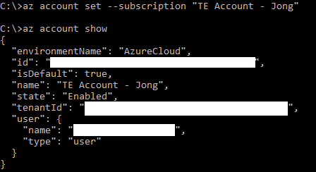

The Azure REST APIs require a Bearer Token Authorization header. The docs do a great job explaining every authentication requirement, but do not tell you how to quickly get started. This post will hopefully solve that for you.
We’ll first create an Azure Active Directory Service Principal and use it in Postman to generate a Bearer Token and then call the Azure REST APIs.
Azure Setup
Note that the below configuration uses the default Service Principal configuration values. In a production application you are going to want to configure the Service Principal to be constrained to specific areas of your Azure resources. You can find more info on the configuration options in the Azure CLI Service Principal Documentation.
Get the Azure CLI
You have two options when executing Azure CLI commands:
Azure Cloud Shell
Go to Azure Cloud Shell
Local with Azure CLI
Install Azure CLI 2.0
Login
|

If a browser doesn’t automatically open, go to http://aka.ms/devicelogin and enter the code show in the console.
Set Active Subscription
|

Create Service Principal
|

Copy this output to a temp location, you will need the values in a minute.
Service Principal Password Reset
You can execute the following command if you ever need to reset your Service Principal password.
|
You can read more about Service Principals here.
Postman Setup
We are now going to use Postman to execute a REST call to get the Bearer Token and another to Get Resource Groups.
Install Postman
Install Postman, to execute the REST APIs.
Close Postman
For PC Only…
The next step only works if Postman is closed. Please close Postman now.
People have reported that you don’t need to do this on Mac.
Click “Run in Postman”
Click this button:

This will open your browser and present you with two options. Select the best option for you under “Open with…” On Windows select “Open with…Postman for Windows”

Inspect Requests
You will notice that there is a new collection in Postman called “Azure REST”. Take a few minutes to inspect the requests and get familiar with them.

Get AAD Token Request
This request will POST to https://login.microsoftonline.com/{{tenantId}}/oauth2/token with our Service Principal settings and then, in the “Tests” will set a Postman Global Variable called bearerToken to the access_token in the response.

Get Resource Groups Request
This request will GET https://management.azure.com/subscriptions/{{subscriptionId}}/resourcegroups?api-version=2017-05-10 with an Authorization header set to the Bearer Token we just requested with ‘Get AAD Token’.
Set Environment Variables
When you clicked on the “Run in Postman” button Postman also created an Environment for you called “Azure REST”. You will now set your Service Principal settings in the Environment to be used in the requests.
- Click on the gear icon in the upper right hand corner of Postman and select Manage Environments.

- Click on the
Azure RESTEnvironment and you will see all the required settings.

- Enter all your settings from the Service Principal we created earlier. Here’s how they map:
|
az account show --query id
When you are done it will look like this with all the values filled in:
Make sure that the Azure REST Environment is selected in the Environment dropdown in the upper right hand corner of Postman.
We are now ready to execute the requests!
Execute Get AAD Token Request
First, we will execute the Get AAD Token request to get our Bearer Token and put it in a Postman global variable.
- Open the Get AAD Token request and click the Send button.
You will see the following output:
|

The access_token property is now stored a global variable, which was set in the “Tests” tab.
|
Execute Get Resource Groups Request
We’ll now execute any Azure REST API with that Bearer Token. Just as an exercise, we’ll execute the Get Resource Groups request.
- Open the Get Resource Groups request and click the Send button.
You will see the following output:
|

That’s all there is to it. Now you can go an explore all of the Azure REST APIs and use this same method to generate the required Bearer Token Authorization header.
Please let me know if you run in to any issues.
Jon